Workflow Overview
This chapter describes a complete workflow from creating a new project to publishing to devices.
The example uses a Numbers spreadsheet template and multiple playback devices; you can adapt it to your own setup.
Installation and Requirements
Before starting the workflow, complete the installation and environment setup:
- Sign in to the SLAM Cloud portal: cloud.slam.systems.
- Go to the Resources section and download the latest DIRECTOR COR package.
- Install DIRECTOR COR on your Mac.
Runtime system requirements:
- macOS 16
- Numbers.app installed (required for template import and automation)
Tutorial Video
If the embedded player is blocked in your environment, watch here: SLAM.SYSTEM COR Tutorial on YouTube
High-level steps:
- Create a new DIRECTOR COR project
- Import a playlist from a Numbers template
- Select the Numbers template file in the system file picker
- Open the Device Settings window
- Discover and add devices on the local network
- Review and manage the device list
- Publish and monitor sync progress
- Confirm publish completion
Step 1: Create a New Project
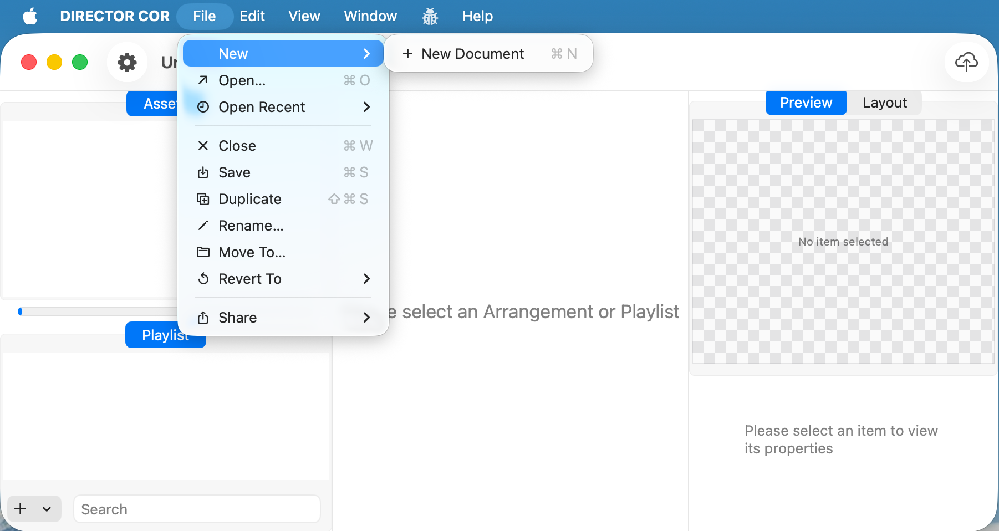
- From the top menu choose
File→New, or use the keyboard shortcut to create a new document. - After creation, the window title shows
Untitled, and both theAssetsandPlaylistareas are empty. - The
Preview / Layoutswitch is already visible in the top-right corner, but there is no content to preview yet. - Save this document, for example:
Untitled.cor.
Step 2: Import from a Numbers Template
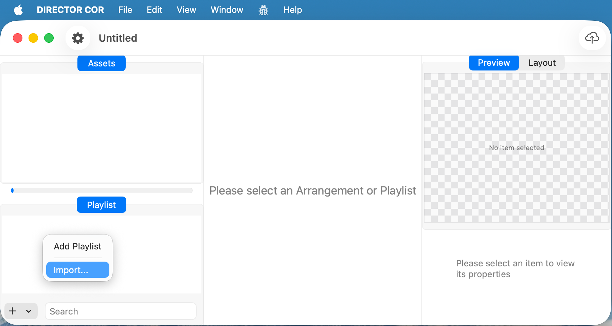
- In the
Playlistarea at the bottom-left, click the+button. - In the pop-up menu, choose Import….
- The import feature can read an external template (such as a Numbers spreadsheet) and automatically generate playlist items and timeline entries.
If prompted: grant system permissions
During the first import, macOS may prompt you to grant permissions so DIRECTOR COR can automate Numbers and control the UI:
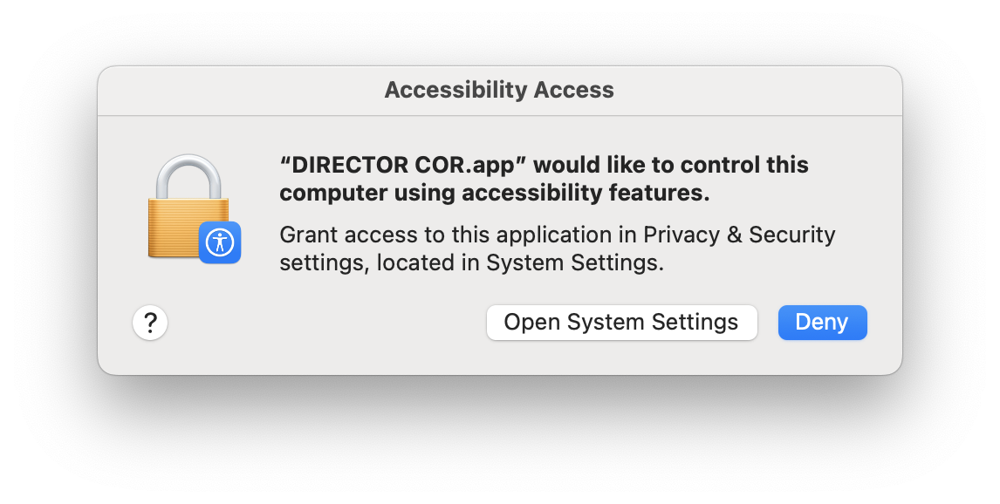
- Click Open System Settings to grant Accessibility access.
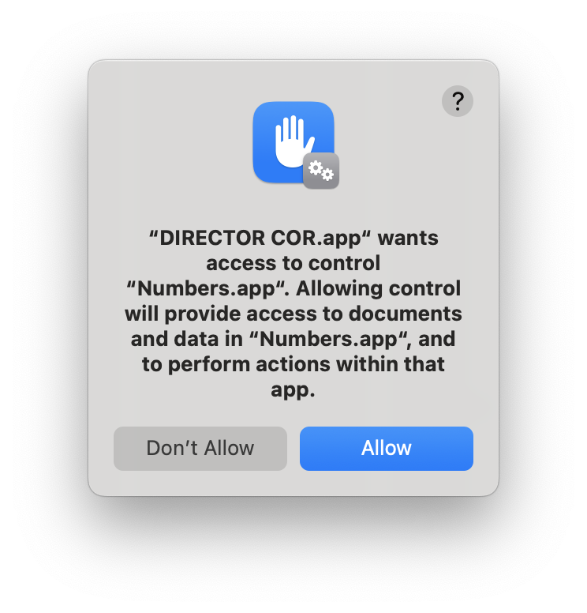
- Click Allow to permit DIRECTOR COR to control
Numbers.app.
Then, in System Settings → Privacy & Security:
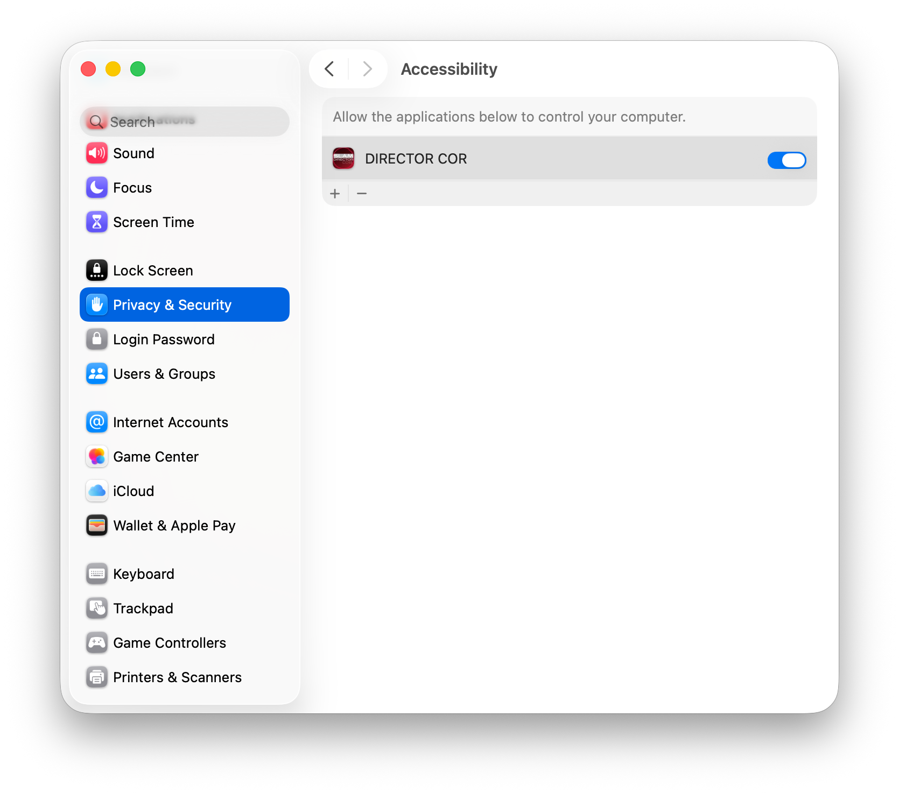
- Ensure DIRECTOR COR is enabled under Accessibility.
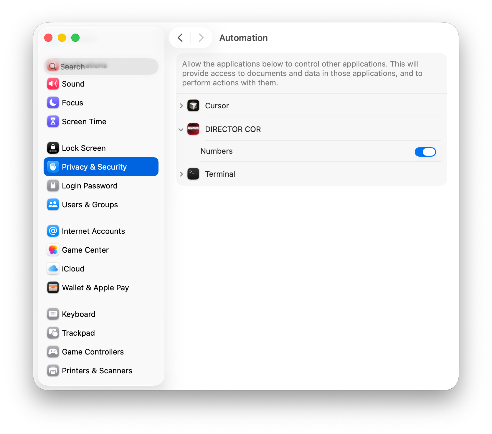
- Under Automation, expand DIRECTOR COR and enable control of Numbers (and other required apps, if listed).
Step 3: Choose the Numbers Template File
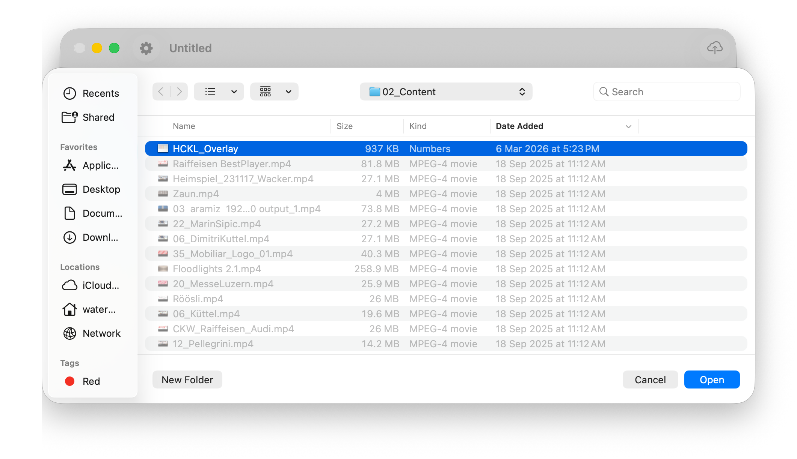
- In the system file picker, navigate to the folder that contains your template.
- Select the prepared Numbers template (for example
HCKL_Overlay), and make sure its structure matches the DIRECTOR COR import format. - Click Open. DIRECTOR COR parses the template and generates the corresponding playlist and Editor rows.
Step 4: Open Device Settings
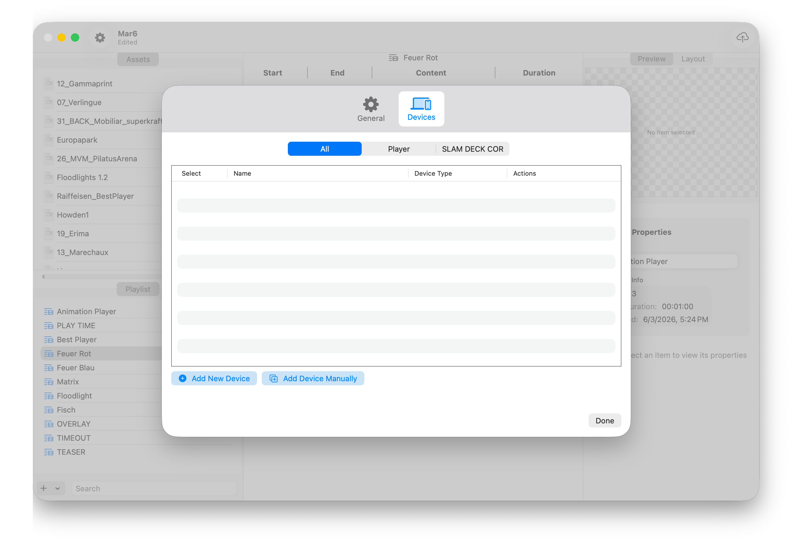
- After the import has created your playlist, open the Device Settings window (typically via the Settings icon or menu).
- In the dialog that appears, switch to the Devices tab.
- At the top, choose the current Player type (for example
SLAM DECK COR) so that only relevant devices are shown.
Step 5: Discover and Add Devices
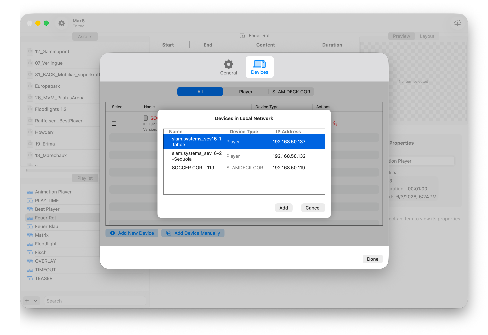
- In the Devices window, click Add New Device to start scanning the local network.
- The Devices in Local Network sheet lists available players and control devices, including:
- Device name (for example
slam.systems_sev16-1-Tahoe) - Device type (
PlayerorSLAM DECK COR) - IP address
- Device name (for example
- Select the devices you want to use for this project, then click Add to add them to the device list.
Step 6: Manage the Device List
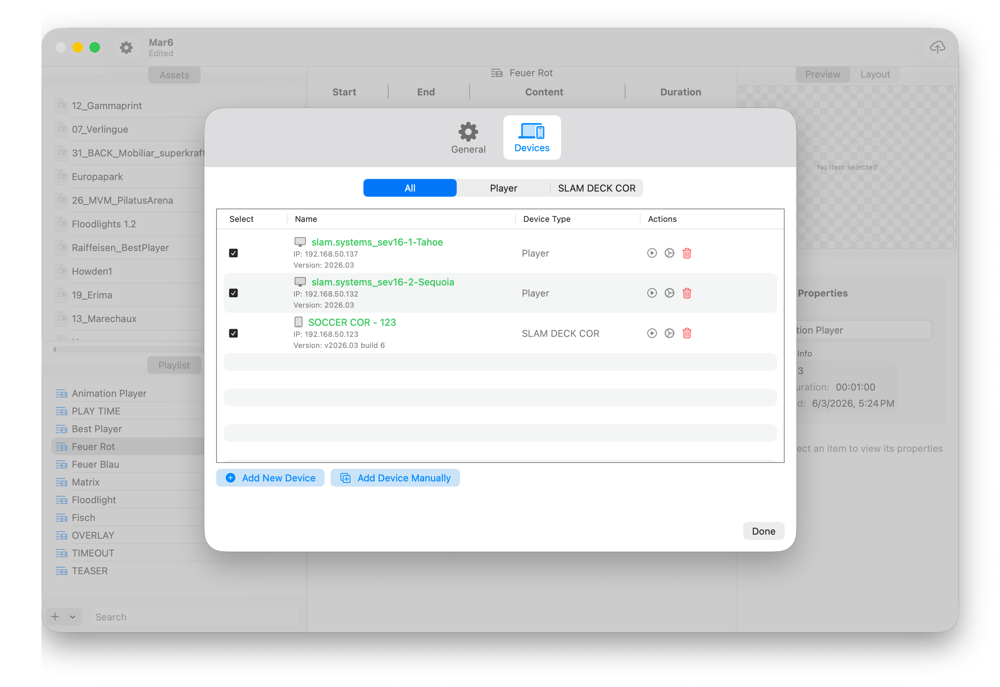
- Back in the main Devices window you can now see all added devices:
- Each row shows the name, IP address, version, device type, and more.
- Use the checkboxes on the left to choose which devices should receive the current project.
- The action buttons on the right can be used to:
- Test connectivity
- Re-sync
- Remove the device from the list
- When everything looks correct, click Done to return to the main window.
Step 7: Publish and Monitor Sync Progress
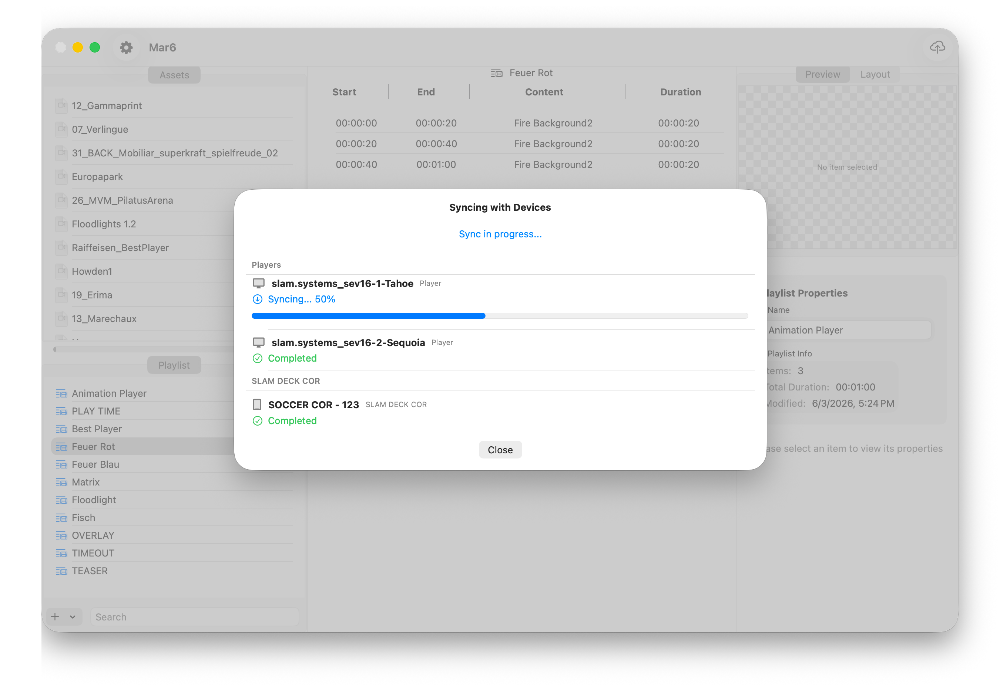
- Click the Publish cloud icon in the top-right corner to start the publish process.
- The Syncing with Devices window shows sync progress for each device:
- “Syncing…” indicates that data is being transferred or processed
- A progress bar shows the current percentage
- While publishing, keep the network connection stable and avoid closing the app or target devices.
Step 8: Publishing Complete
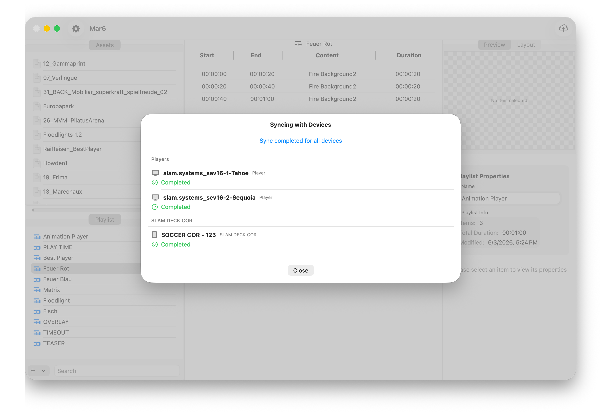
- When the status for all devices changes to Completed, the top of the window shows Sync completed for all devices.
- At this point, the playlist has been successfully distributed to all selected Player and SLAM DECK COR devices.
- Click Close to dismiss the dialog, then verify playback on site or in your test environment.
With these steps, you complete the full DIRECTOR COR workflow: create a project, import a template, connect devices, and publish your playlists.
Additional Video
RGB Controller Configuration: SLAM DECK COR & Nova Controller
Watch on YouTube